Problem & Goal
Raftcraft runs peer-to-peer over Steam. One player’s machine is the server, there is no dedicated server to fall back on, and everything that matters (the raft, the run, the party’s money) is physics and game state on that machine. Almost all of my work on the project comes from that:
- A raft is dozens of simulated parts welded into one body, and every client has to agree on its shape.
- Players drop in and out. Someone joining late arrives in a streamed level that already exists, next to a raft that’s already built.
- If the host quits, the session shouldn’t end. Another player has to take over with the raft intact.
- Progress lives for three lengths of time (this run, this session, forever), and designers need to choose per variable without writing save code.
- It goes on sale, so saves have to survive Steam Cloud, corrupt files and the same player on two machines.
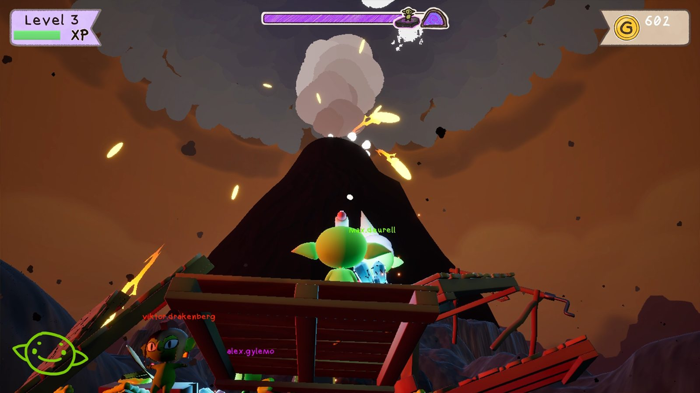
How the Project Changed
I’ve been on it since the repository’s first week in May. The game, the team’s build system and my role all changed along the way, and not everything I built is in the game that ships.
- Build & spawn systems 83
- Multiplayer & run flow 115
- Saves, stats & unlocks 56
- Tools, performance & shipping 76
Show the data
| Week of | Build & spawn systems | Multiplayer & run flow | Saves, stats & unlocks | Tools, performance & shipping |
|---|---|---|---|---|
| 18 May | 1 | 0 | 0 | 0 |
| 25 May | 9 | 0 | 0 | 1 |
| 1 Jun | 18 | 0 | 0 | 0 |
| 8 Jun | 5 | 0 | 0 | 0 |
| 15 Jun | 2 | 0 | 0 | 1 |
| 22 Jun | 2 | 0 | 0 | 0 |
| 29 Jun | 22 | 0 | 0 | 2 |
| 6 Jul | 9 | 2 | 0 | 8 |
| 13 Jul | 0 | 0 | 0 | 1 |
| 20 Jul | 0 | 0 | 0 | 0 |
| 27 Jul | 0 | 0 | 0 | 0 |
| 3 Aug | 0 | 6 | 0 | 1 |
| 10 Aug | 10 | 5 | 2 | 7 |
| 17 Aug | 0 | 2 | 17 | 0 |
| 24 Aug | 1 | 14 | 4 | 0 |
| 31 Aug | 0 | 44 | 0 | 3 |
| 7 Sep | 1 | 16 | 1 | 12 |
| 14 Sep | 1 | 15 | 9 | 4 |
| 21 Sep | 0 | 0 | 4 | 0 |
| 28 Sep | 0 | 5 | 12 | 7 |
| 5 Oct | 2 | 6 | 5 | 14 |
| 12 Oct | 0 | 0 | 2 | 15 |
- May–June: carts and a build system. The project started as a physics cart game; the earliest code in the repository is four attempts at a vehicle. My first job was the build system: grab loose props and weld them into one body. I wrote it actor-first, split it into components a week later, and added wheels with generated constraints and axle centre of mass.
- June–July: Build System V4. Parts still had to be special actor classes, and replication was unreliable, so I started a graph-first system that any actor could join. On 30 June I cut it roughly in half to get to a playable loop of place, fuse and detach.
- July: the team picks another build system. On 1–2 July a teammate’s build system landed and the game’s parts were ported onto it, the same day my V4 welding and replication work went in. V4 stayed an opt-in route beside it. In August I wrote a compatibility layer so content could move across piece by piece, then reverted it myself and moved on.
- August–September: the co-op layer. I moved to what the game didn’t have yet: resets without disconnects, late join, host migration, a save system and Steam Cloud. What I’d learned about welding went into client-side fixes in the new build system.
- September–October: shipping. My own achievement system gave way to Steam stats, and I added voice chat, cosmetic unlocks, localization with a first Swedish pass, profiling tools, graphics presets and baked lighting for the streamed levels. I archived my build systems on 14 September, and in October moved the rest of the superseded code, the team’s and mine, into Legacy folders that the build skips.
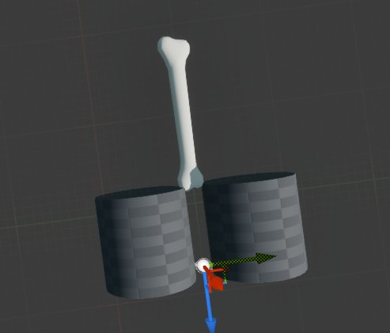
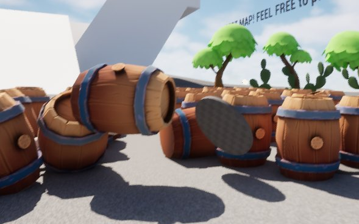
Build System, Four Versions
The goal never changed: players grab loose parts and fuse them into one rigid thing that the physics engine treats as a single body. Each version fixed what the previous one couldn’t do.
- Actor-firstPart and assembly base classes, a carried part becomes the weld root
- ComponentsMass, contacts, graph and weld split out; wheels
- V4Any actor opts in; a server-owned graph replicated as data
- Build ConstructsA compatibility layer for the team’s system, then reverted
From part classes to one component
The first two versions needed every buildable thing to be one of my actor classes, with three meshes each: the visible one, an outer shell for sensing contacts and an inner collider. That was fine for a prototype, but every new prop meant a new subclass, and parts replicated reliably only some of the time.
V4 turned that around. A part is any actor with a UBuildableV4Component. The server keeps a graph of nodes (parts) and connections (welds or hinges), validates every fuse request against it, and clients rebuild their world from the graph. Its first pass had separate authoring components and a lot of machinery that nobody had played with yet. On 30 June I collapsed it to the one component.
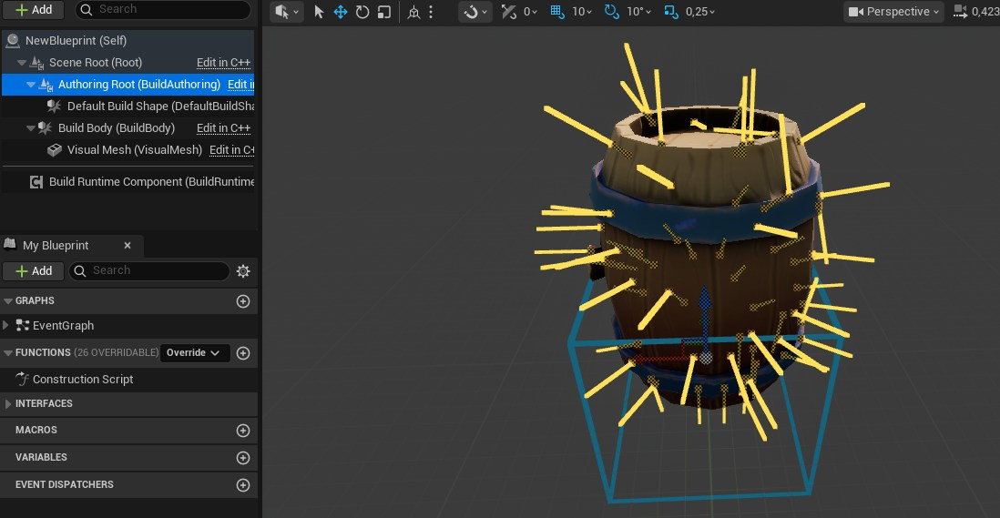
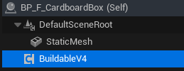
Welded islands, not constraint chains
Connecting parts with physics constraints made big structures sag and wobble. V4 welds every rigid island (parts connected by rigid joints) into one compound body under a root part, so Chaos simulates it as a single rigid body. Hinges become revolute constraints between island roots and are rebuilt whenever a root changes. Removing a part unwelds its island first, and when an island splits, each new root gets the old root’s velocity at its own position (v + ω × r) so the halves don’t stop dead.
The root has to be the same on every machine, or clients weld the same parts in different orders. It’s chosen by a fixed preference over snapshots sorted by node id: the part being held during a carry, then the island’s existing root, then an anchored part, then the lowest node id.
Replicating the graph as data
Parts weren’t replicated as actors at all. A late joiner gets a full snapshot of the graph; after that the server sends structural deltas, or a full snapshot when a delta would be larger or doesn’t follow on from the last revision the clients have:
RefreshInitialGraphSnapshot();
const FBuildGraphSnapshot CurrentSnapshot = InitialGraphSnapshot;
const FBuildGraphStructuralDelta StructuralDelta =
BuildSystemV4Replication::MakeStructuralDelta(
LastPublishedSnapshot,
CurrentSnapshot
);
const bool bUseFullSnapshot =
StructuralDelta.FromRevision != LastPublishedRevision ||
StructuralDelta.ToRevision != CurrentSnapshot.Revision ||
EstimateStructuralDeltaPayloadBytes(StructuralDelta) >
EstimateFullSnapshotPayloadBytes(CurrentSnapshot);
if (bUseFullSnapshot)
{
Multicast_ApplyFullGraphSnapshot(CurrentSnapshot);
}
else
{
Multicast_ApplyGraphStructuralDelta(StructuralDelta);
}- Clients apply each delta as a transaction and roll back if it doesn’t fit their graph. Stale deltas are dropped, early ones are queued (up to 32), and a gap that lasts a second triggers a resync.
- Clients can’t call a server RPC on an actor they don’t own, so every player gets a small owner-only channel actor for resync requests, rate-limited to one every two seconds.
- Positions are quantised to 0.01 cm and rotations compressed, scale is implied, and endpoints are derived instead of sent. That roughly halved the bytes per connection.
- 38 automation tests run a server world and a client world side by side in one process, covering sockets, placement, welding, snapshots, deltas, resync and malformed input.
What carried over
None of the V4 code is in the shipping game; it’s archived with its tests. What carried over was knowing where welding goes wrong. In September I fixed client-side welds in the team’s build system: wait until every part of an assembly has arrived before welding (each weld recreates the root’s physics particle), hold the root kinematic while waiting, apply the server’s root rotation before welding, skip welds that change nothing, and hold back a joining player until their raft has settled. The new system’s mass modes (loose, attached, carried) and its weld-to-root approach follow my first prototype.
Two months of build-system work didn’t ship as code.
It shipped as the welding and replication knowledge behind the fixes that did.
Co-op Without a Dedicated Server
Three things kept ending co-op sessions: a wipe disconnected everyone, late joiners fell into a world that wasn’t there yet, and the host quitting ended the game. I fixed them in that order.
Resets that don’t disconnect everyone
When the party wipes, the server travels back into the level. Over Steam sockets that disconnected every client. The cause turned out to be two things at once: the run game mode had never enabled seamless travel, so every reset was a hard travel, and the editor silently turns seamless travel off in play-in-editor unless a console variable says otherwise, so every test until then had been testing hard travel too.
Seamless travel brought its own bug. Clients keep replicated actors they don’t own through the travel, so loose build pieces survived as orphans: the raft “exploding into floating boxes”. The game mode now destroys every actor that isn’t safe to carry across, then waits before travelling:
DestroyTravelUnsafeActors();
// Delayed by wall-clock time, NOT one tick.
//
// The destructions above only reach clients when the net driver next flushes,
// and that runs at NetServerMaxTickRate — 30 Hz by default, so roughly every
// 33ms. A single frame is 8-16ms, so deferring "one tick" could travel before
// a single net update had happened, and the close bunches would never be sent.
// Clients then keep those actors through seamless travel and end up holding
// orphans.
FTimerHandle TravelHandle;
GetWorldTimerManager().SetTimer(TravelHandle,
FTimerDelegate::CreateWeakLambda(this, [this, TravelURL]()
{
UWorld* DeferredWorld = GetWorld();
if (!DeferredWorld || !DeferredWorld->ServerTravel(TravelURL))
{
UE_LOG(LogTemp, Error, TEXT("ServerTravel to '%s' failed."), *TravelURL);
bIsTravelling = false;
}
}), TravelDestructionReplicationDelay, false);Resetting in place, without travel, was the alternative. I estimated 45–55 reset handlers, weeks of work, against half a day to harden travel, and wrote the comparison up for the team. Per-player state that has to outlive the level (colour, last position, which raft you were standing on) lives in a game-instance subsystem keyed by Steam id, and is applied from both login paths, because seamless travel never calls PostLogin. That’s why colours used to reset.
Late join: no pawn before the host’s state
A joining client checks, every 0.1 seconds, that each of these has arrived before it tells the server it’s ready:
- Game stateand a valid session id
- Team datapublished by the host, not defaults
- Worldevery streamed chunk loaded and visible
- Raftthe player’s raft welded and settled
Chunks were spawned with multicasts, which only reach players who are already connected, so I added a replicated list of settled chunks that a late joiner streams from, matched by instance name so it’s safe to apply twice. Each blocker is logged once, and after 15 seconds the player joins anyway with an error in the log, rather than waiting forever.
Designers decide what happens when a player is ready: BP_RunGameMode overrides HandleJoinReady to read team data and decide whether to regenerate the world. What they can’t do is spawn a pawn too early by accident:
/**
* The two pawn-spawning entry points, overridden for one reason: to put
* "no pawn before this machine has the host's state" somewhere a Blueprint
* cannot get around it.
*
* Everything else in the spawn path — PlayerCanRestart, HandleStartingNewPlayer,
* MustSpectate, SpawnDefaultPawnFor — is a BlueprintNativeEvent, so a Blueprint
* override REPLACES the C++ version and one missing Parent call would take the
* gate with it, silently. These two are plain virtuals that Blueprint can call
* but not override, so the rule holds whatever is done above them.
*/
virtual void RestartPlayerAtPlayerStart(AController* NewPlayer,
AActor* StartSpot) override;
virtual void RestartPlayerAtTransform(AController* NewPlayer,
const FTransform& SpawnTransform) override;The first version started the check from HandleStartingNewPlayer. A day later I moved it, because that event is one Blueprint can override, and an override without the parent call would have stopped the check from starting while the hard gate kept refusing the player for good.
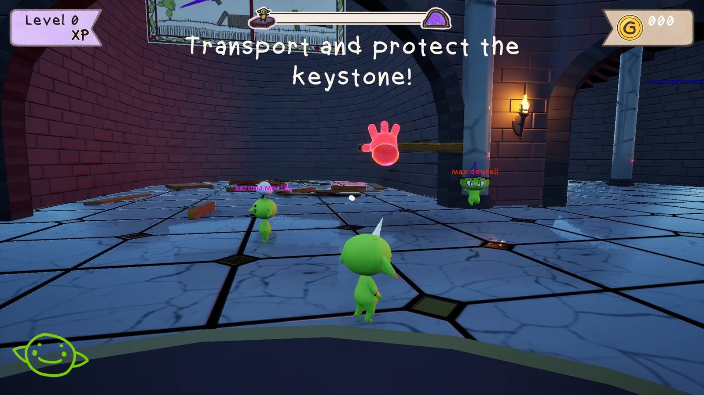
Host migration
In a listen-server game the host leaving normally ends the session. Here the run continues: same run, same streamed world, same raft, with riders put back on its deck.
- Hold0.5 s of host silence freezes physics
- Electafter 5 s, every machine picks the same successor
- Hand offthe new host opens a tagged session; the rest join it
- Resumesame run, same world, the raft rebuilt and re-posed
- Hold. A client that hears nothing from the host for half a second freezes every simulated body: physics replication off, velocities saved, bodies kinematic. Not asleep, because a sleeping body wakes at the first contact, which on a deck with a player on it is immediately. Input is disabled too. It’s fully reversible, so an ordinary network hiccup recovers without anyone falling into the lava.
- Mirror ahead of time. During play the host keeps every client up to date with what a successor would need: run index and session id, the world-generation history and settled chunk layout, platform poses every two seconds, and a connection table. Each machine also snapshots the raft and the host’s team data itself, so nothing depends on one last message arriving.
- Elect without talking. After five seconds, each machine picks a successor from its own copy of the table. The timer lives on the game instance, because the engine has already started tearing the world down.
- Resume. The new host republishes the same run index, so no machine sees a run boundary, adopts the stored chunk layout if it was recorded for this map, rebuilds the raft from the snapshot without charging for it, and restores each platform’s pose once the world has streamed in. Platforms stay parked until the returning players are back, for up to 20 seconds.
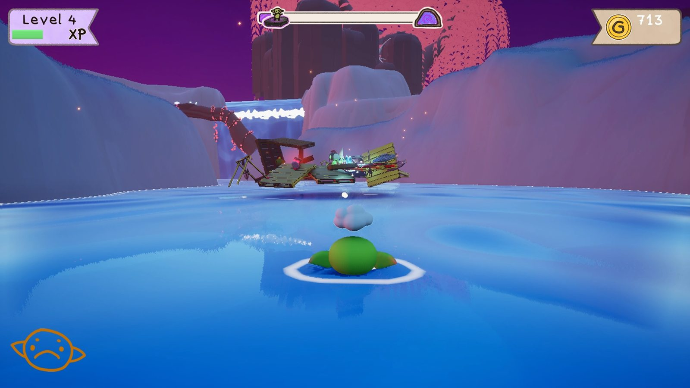
// Ranks on identity, not connection. The table replicates as one atomic
// TArray, so a machine holds version N or N-1 of the whole thing — and a ping
// ordering changes with every sample, so two machines one version apart would
// elect different hosts and split the party. An id ordering only moves when
// somebody joins or leaves.
FString FConnectionQuality::PickSuccessor(
const TArray<FConnectionQualitySample>& Samples)
{
const FString* Best = nullptr;
for (const FConnectionQualitySample& Sample : Samples)
{
// An id the platform could not supply is one no two machines would
// agree on, so it is not a candidate.
if (Sample.PlayerId.IsEmpty())
{
continue;
}
// Case-sensitive on purpose: the comparison has to mean the same thing
// on every machine.
if (Best == nullptr ||
Sample.PlayerId.Compare(*Best, ESearchCase::CaseSensitive) < 0)
{
Best = &Sample.PlayerId;
}
}
return Best != nullptr ? *Best : FString();
}The platform poses took three tries. Applying them in BeginPlay was too early, because assemblies weld after construction. Applying them on a migration flag failed because the flag was gone before streamed platforms existed. What works is continuous sampling, merged by platform key, where the presence of a record is the signal and each one is used once.
Saves That Survive Travel and Host Changes
Designers add variables to two Blueprints, BP_TeamData and BP_PlayerData, and pick each one’s lifetime from the Category dropdown: Run, Session or Permanent. That’s the whole integration.
In the game today, BP_TeamData holds 13 variables (money, remaining lives, unlocked lairs, beaten biomes, saved parts), all Run or Session. BP_PlayerData holds 19, mostly Permanent: volumes, graphics level, language, XP and the goblin’s hat, face and ears.
- RunCleared when the party starts a new attempt
- SessionCleared when a new game session starts
- PermanentPlayer data only; written to disk and Steam Cloud
A dropdown that decides the lifetime
Category is editor-only metadata, so a packaged build can’t read it. When a save container Blueprint compiles, it walks the properties the Blueprint declared, parses each Category and bakes a name-to-lifetime map into the class default object, which is cooked with the asset. C++ members are skipped by declaring class, not by name, so engine machinery can’t end up in a save. A Category that isn’t one of the three is filed as None and the designer gets a toast in the editor, because quietly treating a typo as Run would wipe something they meant to keep.
ESaveLifetime USaveContainer::ParseLifetime(const FString& CategoryText)
{
// A Category can be a path like "Save|Run", so only the last segment
// decides the bucket.
FString Leaf = CategoryText;
int32 SeparatorIndex = INDEX_NONE;
if (CategoryText.FindLastChar(TEXT('|'), SeparatorIndex))
{
Leaf = CategoryText.Mid(SeparatorIndex + 1);
}
Leaf.TrimStartAndEndInline();
// FString comparison is case-insensitive, so "run" works as well as "Run".
if (Leaf == TEXT("Run")) { return ESaveLifetime::Run; }
if (Leaf == TEXT("Session")) { return ESaveLifetime::Session; }
if (Leaf == TEXT("Permanent")) { return ESaveLifetime::Permanent; }
// Not chosen yet means Run, so nothing quietly accumulates.
if (Leaf.IsEmpty() || Leaf == TEXT("Default")) { return ESaveLifetime::Run; }
// A typo must stay distinct: reading it as Run would wipe a variable
// somebody meant to keep.
return ESaveLifetime::None;
}Who owns which data
- Team data belongs to the host. It replicates to clients as a subobject of the game state and never touches disk. On a client, a write guard snapshots the host’s values when they arrive and, after each frame’s actors tick, reverts any local Blueprint write, logging it once. A replicated revision counter lets late joiners tell real values from untouched defaults, and an async
Wait For Team Datanode replaced the delay nodes Blueprints had been using. - Player data belongs to the player’s machine. It is never replicated, and ticking Replicated on a player variable is flagged at compile time. My first version had clients publish their permanent data to the server; a week later I removed that, so a player’s save never leaves their machine and anything others need to see lives in team data or live game state.
- Boundaries come from the session id and run index. A boundary is any change in either, not an increase, because joining a different host can give you a lower run index. Repeats are ignored, so a host change or a reconnect that republishes the same pair clears nothing. Permanent data is saved before anything is cleared.
Steam Cloud and corrupt saves
- One variable at a time. Permanent data is written per variable, keyed by name, so renaming or retyping one variable in a later patch loses only that variable, and the load reports which.
- Cloud first, decided once. The shipping build saves to Steam Cloud through the synchronous remote-storage API, so it also works during shutdown. Whether to use the cloud is decided on the first read and fixed for the rest of the process. Otherwise a load that ran before Steam was up could be followed by a write once it was, putting an empty save over the player’s real one.
- Quarantine. A save that won’t load is copied byte-for-byte to a local
_Unreadableslot (never the cloud, which would spend the player’s quota) and the original is removed, so the same bad file doesn’t fail every launch on every machine. If the copy fails, all writes stop for the session so the only copy survives. - Rescue. A save written before Steam Cloud was switched on is uploaded before the first cloud read, so playtesters’ existing saves didn’t look wiped.
Steam Stats and Cosmetic Unlocks
Gameplay reports what happened (a jump, a level finished without building) as a gameplay tag. Project settings map tags to Steam stats, and Steam’s own progress thresholds unlock the achievements.
August: my own ledger
Achievements were DataTable rows, and a local ledger was the source of truth with Steam and Epic as mirrors, so it worked in the editor and offline. It had per-run and compound achievements and progress toasts, and generated the Steam ini.
September: Steam is the truth
The local cache and Steam ended up fighting each other, so I replaced it. Counts now live only in Steam stats, written through ISteamUserStats. The local cache, the achievement queries and the ini generator are gone, and the code shrank by more than a third.
- One machine counts for one player. A report always means “this happened to me”. A team event goes to the host, which multicasts it so every machine reports it for its own player.
- Reads guard writes. Adding to a stat reads it first, and a failed read means no write, so a total Steam hasn’t loaded yet is never overwritten with a made-up one.
- Resets in the right order. Run-scoped stats reset at the save system’s boundaries: store, zero, store again. Steam evaluates unlocks when stats are stored, so zeroing a peak before it’s stored would silently skip the achievement.
// MANDATORY, and first. Steam evaluates achievement auto-unlock at StoreStats,
// not at SetStat, so a run-scoped stat zeroed before its peak has been stored
// is a threshold that silently never fires.
StoreNow();
for (const FSteamStatBinding& Binding : FlatBindings)
{
const bool bMatches =
(Binding.Reset == ESteamStatReset::Session && bClearSession)
|| (Binding.Reset == ESteamStatReset::Run && bClearRunScope);
if (bMatches && FSteamStatStore::TrySetStat(Binding.SteamStatName, 0))
{
bUnstoredChanges = true;
}
}
// Store the zeros. Without this they never leave the process.
StoreNow();Cosmetics build on both systems. A designer can lock any row of a cosmetics DataTable behind a Steam achievement, a stat reaching a value, or an Unlock.* tag fired from Blueprint; 34 hats currently unlock through tags. Unlocks are checked whenever a stat changes or Steam stores stats, saved straight away as permanent player data, and handed to the UI once, so a popup and the end-of-run screen never both show the same hat. The editor gets a one-line picker for table and row.
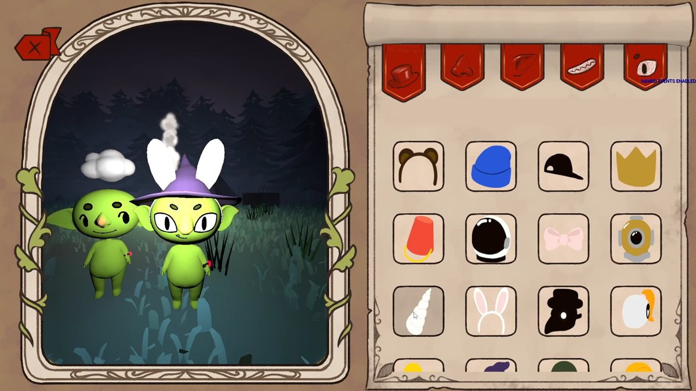
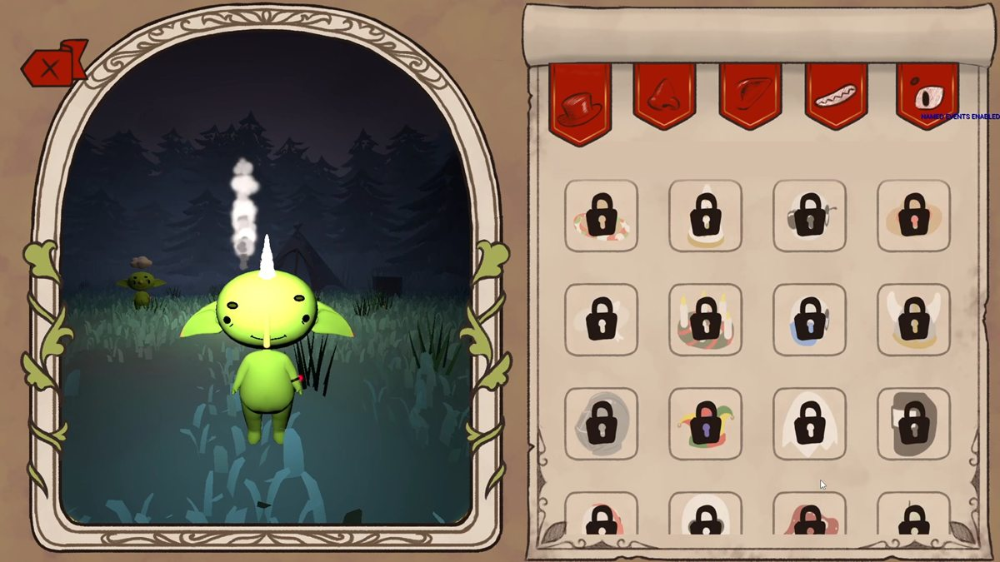
Saved Rafts and the 64 KB Limit
The party’s raft carries over from one lair to the next. A teammate built the first version; I moved its storage into team data, so host migration carries it and clients can read it, and then it broke a real session.
In a three-player playtest, six stored rafts added up to 71,989 bytes. Team data replicates as part of the game state, a reliable bunch can’t be larger than 65,536 bytes (its size field is 16 bits) and can’t be split, so the engine refused the whole bunch. The run index was in the same bunch, so every client stopped receiving run boundaries and lost control of their character for the rest of the session.
- Only the most recent raft was ever read, so storage became one raft, not a list.
- Each capture is measured with the save archive before it’s published: refused at 65,536 bytes with a clear error and the previous raft kept, and a warning from 32,768. Real rafts are 36–64 parts; the largest measured 39,493 bytes.
- A capture identical to the stored raft isn’t republished. Players pull the save lever again and again, and those republishes had been most of this data’s network traffic.
- Four automation tests pin the limits, including a real 64-part raft and the six-raft payload from that playtest.
Rebuilding a saved raft costs money for every part the level’s material shop didn’t already provide. The bill is a pure function that takes the free stock as an argument, because that pool only exists on the host, and a client reading it would price every part. The stock is replicated on the rebuild pad, so host and client show the same price. In Blueprint, the designer’s lever is just BaseCost + CostPerPart × GetRebuildUnaccountedPartCount.
// What the material shop put in this level and nobody has used yet. Comes
// in as an argument rather than being read off UFreeMaterialPoolSubsystem,
// because that pool only exists on the host: a client reading it would find
// it empty and price every single part.
TMap<UClass*, int32> FreeByClass;
FreeByClass.Reserve(FreeStock.Num());
for (const FFreeMaterialStock& Entry : FreeStock)
{
if (Entry.PartClass != nullptr)
{
FreeByClass.FindOrAdd(Entry.PartClass.Get()) += Entry.Count;
}
}
for (const TPair<UClass*, int32>& Pair : NeededByClass)
{
FSavedPartBillLine& Line = Bill.Lines.AddDefaulted_GetRef();
Line.PartClass = Pair.Key;
Line.NeededCount = Pair.Value;
Line.FreeAvailable = FreeByClass.FindRef(Pair.Key);
Line.UnaccountedCount = FMath::Max(0, Line.NeededCount - Line.FreeAvailable);
Bill.UnaccountedPartCount += Line.UnaccountedCount;
}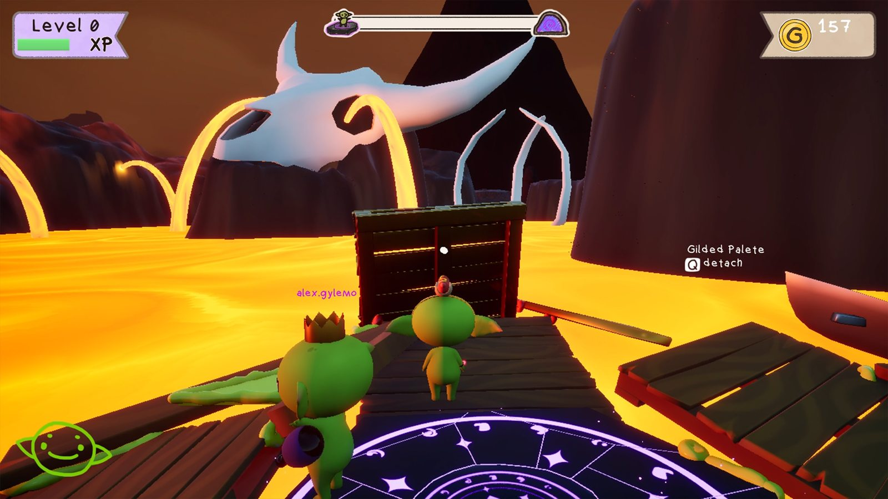
Tools and Release Prep
The rest is what a small team needs to find problems and ship: spawning driven by data, a way to read Blueprints as text, logs from several machines, and profiling testers can run themselves.
Part spawning from the catalog
Pit stops scatter random raft parts. The first spawner needed hand-built lists per spawner; my second version reads the part catalog other teammates maintain, so adding a row makes a part eligible. A designer picks categories and tier weights (Common 70, Rare 25, Epic 5 by default), and each tier’s weight is split evenly among its parts, so adding parts to a tier doesn’t change how often that tier appears. Placement can be strict, adjust to fit, or search upward and forward for a free spot that avoids the world and everything placed in the same request. It also spawns continuously and fills areas, with 15 automation tests on selection and the catalog query. An early version read a Blueprint struct by matching generated property names; I replaced it with typed C++ rows two weeks later.
Reading Blueprints as text
A Blueprint’s logic can’t be recovered by searching its .uasset, which was a large part of why one travel bug took so long to find. I wrote a commandlet that dumps any Blueprint to text: parent class; variables with their type, Category, default and replication flags; and every graph with its nodes, resolved call targets, pin values, links and RPC flags. Category is in there because it decides a save variable’s lifetime. It runs safely next to an open editor, it’s now the documented way to answer Blueprint questions in the repository, and it’s how I checked the Blueprint details on this page.
Logs from several machines
A teammate wrote the original log system, which writes a file per gameplay tag. I made it something to rely on in multi-machine playtests: cached file writers behind a lock instead of reopening the file on every line, UTF-8 that can’t flip encoding mid-file, net mode and frame columns with the process and PIE instance in the folder name, per-tag severity overrides from config, a compile-time switch that removes it from Shipping, and 9 automation tests.
Profiling that testers can run
- Performance summaries. Development builds write one CSV row per second (frame, game thread, render thread, GPU) with the machine’s specs at the top, and log averages, p99, hitches and stalls per level. A hitch is a frame over the larger of 50 ms and twice the median; anything over a second is a stall and is kept out of the averages.
- Trace capture from the menu. Testers record an Unreal Insights trace from tick boxes in the main or pause menu, so a slow playtest machine sends back a trace instead of a description.
- Playtest mode.
-Playtestmakes a Development build look like Shipping to testers (no debug drawing, keys or menu) while keeping full logging. - Graphics presets. The engine benchmark runs on first launch and its scores are saved with a hardware fingerprint. Recommendations are recomputed from the scores at every launch, labelled “(Recommended)” across 11 settings groups, and the benchmark only runs again when the hardware changes.
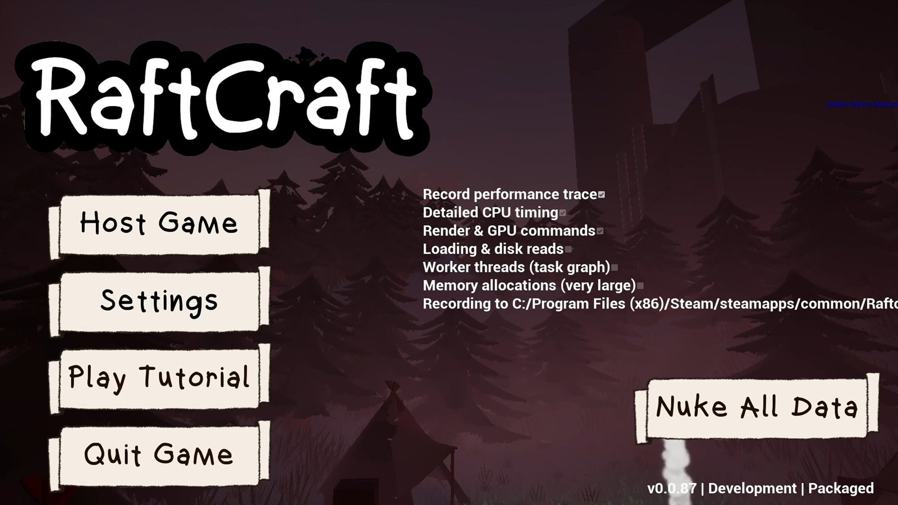
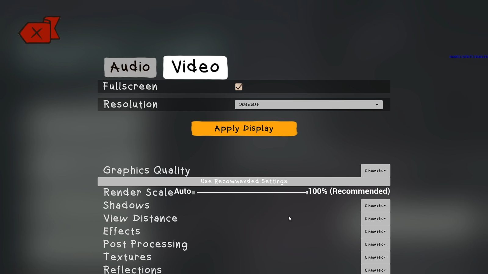
The glowing raft
In a multiplayer playtest the raft and the players glowed, on every machine including the host’s. Levels are built from chunks, each baked on its own as a standalone map and then streamed in moved and rotated. Baked lighting on scenery is stored per mesh and moves with it. Lighting for moving objects isn’t: it’s baked into a volumetric lightmap that can neither move nor rotate, and the scene holds only one. Anything spawned or picked up after a baked chunk streamed in was lit from that chunk’s misplaced volume, which in one Lava chunk held a strong white light 22 m from where the raft starts.
There was a code workaround: the level streamer could give each chunk a new build-data id so its volume never loads. We fixed the content instead, so baked chunks work by construction. Every chunk now bakes sparse volume lighting samples instead of a volumetric lightmap, r.IndirectLightingCache=0 stops the renderer reading those samples, and I rebaked all 62 chunks at Production quality. The bake had to run through the editor world, because the stock bake commandlet crashes when it saves a map containing a landscape, leaving the map and its lighting data out of step.
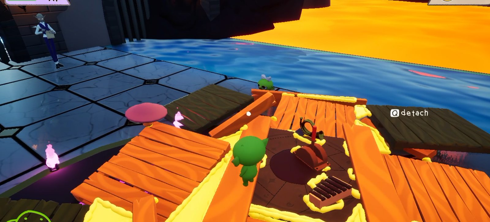
I also moved the project from Unreal 5.7 to 5.8, which meant fixing the bundled plugins and replacing a network physics component subclass that 5.8 no longer lets you link against.
Results
- A wipe resets the attempt without disconnecting anyone, and late joiners arrive into the existing world, team state and raft instead of an empty level.
- When the host leaves, the party elects a new host, reconnects and continues the same run with the same raft.
- Designers add saved data by picking a Category in a dropdown. Saves sync through Steam Cloud, and a corrupt save is set aside instead of failing every launch.
- Seven Steam stats are bound for the achievements, and 34 hat unlocks run through the same systems.
- The saved raft can no longer take a session down: its size is checked against the network limit before it’s ever sent.
- Testers record their own performance traces and CSVs, and graphics settings start from a benchmark of their machine.
- Superseded systems, mine included, are archived where the build skips them, so new code isn’t written against dead APIs.
What I’d Change
- Get it playable, and agreed on, before it gets big. V4’s first version had editor authoring, rollback and 18 tests before anyone had played with it, and in the end the team built on a teammate’s simpler system that content was already moving to. A playable slice and a conversation in week one would probably have saved most of June.
- Keep the tests through the merge. To keep my merge to main small, I deleted the save and run-flow tests and a two-process network test. Nothing covers saves, Steam Cloud or host migration now. They belong in a test module that merges with the code.
- Budget replicated data from day one. The raft size limit came from a broken playtest. Every replicated container should have had a measured size and a ceiling from the start.
- Automate a host-migration test. It needs real Steam sessions, so it can’t run in the editor, and today it’s tested by hand. Two packaged builds driven by a script would catch regressions before a playtest does.